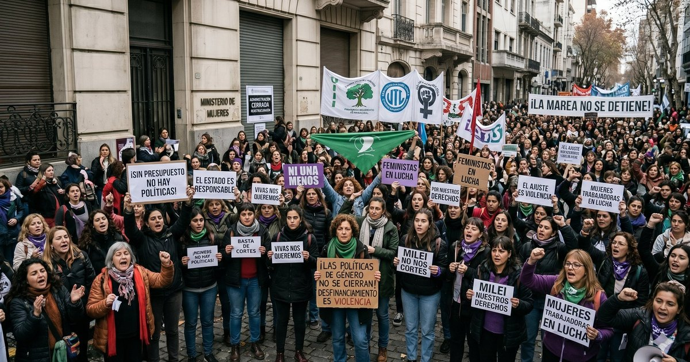

El Estado que se corre: anatomía del desarme de las políticas de género (2023–2026)
En dos años y medio, el Gobierno de Javier Milei no recortó las políticas de género: las desmontó. Eliminó el organismo rector, vació los programas de asistencia y, a diferencia de otros ajustes, lo encuadró abiertamente como batalla cultural. Una lectura desde la administración pública de qué se desarmó, cómo y con qué consecuencias.

Hay ajustes que se justifican por la coyuntura fiscal y hay decisiones que reordenan la arquitectura del Estado. Lo ocurrido con las políticas de género desde diciembre de 2023 pertenece a la segunda categoría. No fue solo una poda presupuestaria: fue la remoción simultánea de la institucionalidad, el financiamiento y el reconocimiento estatal de un área entera de política pública. Conviene analizarlo en esos tres planos, porque es la combinación —y no cada medida por separado— lo que define el alcance del cambio.
Plano institucional: del ministerio a la nada
La primera medida del nuevo gobierno, tomada el mismo 10 de diciembre de 2023, fue disolver el Ministerio de Mujeres, Género y Diversidad creado en 2019. El organismo no desapareció de golpe: fue degradado a Subsecretaría de Protección contra la Violencia de Género bajo la órbita de Capital Humano, luego trasladado al Ministerio de Justicia, y finalmente eliminado de manera definitiva, una decisión que el propio Ministerio comunicó esta semana, a días del aniversario de Ni Una Menos.
Desde la perspectiva de la administración pública, el dato relevante no es el ahorro de una estructura, sino la pérdida de rectoría. Un organismo rector es el que fija lineamientos, articula con provincias y municipios, produce estadística y sostiene la continuidad técnica de una política de Estado. Con su cierre, Argentina quedó sin una autoridad de aplicación nacional en la materia. El Gobierno lo defendió con un argumento de eficiencia y desideologización: sostuvo que el área había sido creada y usada con fines político-partidarios, para imponer una agenda ideológica y financiar militancia. Es una tesis legítima de discutir —toda estructura estatal puede burocratizarse o partidizarse—, pero su validación exigiría evaluación, no eliminación. Y aquí aparece la primera tensión de gestión: no se difundió una evaluación de resultados que respaldara el cierre; se decidió el cierre y luego se lo explicó.
Plano presupuestario: el vaciamiento de los programas
Si la institucionalidad es el continente, los programas son el contenido. Y es ahí donde el repliegue es más medible. Según el relevamiento de Chequeado sobre los ocho principales programas de género, la inversión cayó 90,2% real en 2024 respecto de 2023 y acumuló un 94,8% real de caída hacia 2025. En la práctica, eso significa que la política sobrevive en el organigrama pero no en el territorio.
El caso testigo es el programa Acompañar, que otorgaba un apoyo económico equivalente a un salario mínimo para favorecer la autonomía de personas en situación de violencia. Tras el decreto 755/2024 se endurecieron los requisitos: la prestación se acortó de seis a tres meses, se exigió denuncia previa para acceder, y la cobertura se desplomó de más de veinte mil personas a apenas 434. La Línea 144, puerta de entrada telefónica al sistema de asistencia, perdió dos tercios de su presupuesto y casi la mitad de su planta, con una proyección para 2026 de atender a un tercio de las personas que asistía en 2023. La Educación Sexual Integral, por su parte, figura en el Presupuesto 2026 con una partida equivalente al 2% de lo ejecutado en 2023.
El detalle del requisito de denuncia merece una nota técnica, porque condensa un error frecuente de diseño: condicionar una prestación de autonomía económica a la judicialización previa invierte la lógica del problema. Buena parte de las víctimas no denuncia justamente por falta de autonomía —económica, habitacional, vincular—. Exigir la denuncia como llave de acceso convierte el programa en inaccesible para su propio público objetivo. No es un recorte de monto: es un recorte de cobertura por la vía del diseño.
Plano discursivo: la batalla cultural como política
Lo que distingue a esta gestión de un ajuste convencional es que no presenta estos movimientos como sacrificio fiscal transitorio, sino como convicción. El discurso de Davos de enero de 2025 fue su expresión más nítida: el Presidente agrupó feminismo, diversidad, equidad, aborto e “ideología de género” como manifestaciones de un mismo fenómeno destinado, según su mirada, a expandir el Estado; calificó al feminismo radical como una distorsión de la igualdad ante la ley y una búsqueda de privilegios; y en el pasaje más controvertido vinculó las versiones extremas de la ideología de género con el abuso infantil. Frente a las críticas, ratificó que iba a “seguir acelerando”.
Para el análisis de políticas públicas, lo decisivo de este plano es que cambia la naturaleza de lo que ocurre. Cuando un área se desfinancia por restricción fiscal, puede reconstituirse cuando la restricción cede. Cuando se la desmonta porque se niega la existencia misma del problema que atendía —la desigualdad de género, la violencia por razones de género como categoría—, la reversión ya no es presupuestaria sino conceptual. Se discute si el problema existe, no cuánto invertir en él.
El terreno en disputa: los datos
Toda política se defiende con números, y acá los números están en disputa. El oficialismo difundió que en 2023 “se gastaron 4 billones de pesos en políticas con perspectiva de género”, una cifra que los verificadores señalan como agregado de partidas dispersas de todo el Estado y no equiparable al presupuesto del exministerio, que en 2023 representó el 0,27% del gasto ministerial total. El Presidente niega además la brecha salarial, pese a que INDEC, el BID y organizaciones especializadas la documentan. Y la afirmación de que los femicidios habían alcanzado un récord bajo la gestión anterior no coincide con el registro de la Corte Suprema, que ubica el pico en 2019.
En honor a la precisión —que es lo que distingue al análisis de la militancia—, hay que consignar también el dato que matiza: el registro oficial de la Corte muestra una baja reciente, de 228 femicidios en 2024 a 200 en 2025. El Gobierno puede leerlo como resultado; las organizaciones advierten que la tendencia es previa y que la cifra sigue implicando alrededor de un femicidio cada 30 a 31 horas. Que el dato sea favorable no lo vuelve atribuible sin más a una gestión que, en paralelo, desarmó los dispositivos de prevención; y que sea favorable tampoco autoriza a ignorarlo. Ambas cosas son ciertas a la vez.
Una lectura de conjunto
La política pública de género bajo esta gestión puede resumirse en una secuencia coherente con su programa: se retiró la rectoría estatal, se vació la ejecución y se negó el marco conceptual. Para el Gobierno, es la corrección de un exceso ideológico y la devolución del Estado a sus funciones esenciales. Para los organismos que monitorean el área —ONU Mujeres, Amnistía Internacional, ELA, ACIJ—, es la retirada del Estado de la prevención y la asistencia en un fenómeno que sigue cobrando vidas.

Juan Pablo Capriotti
Escribe sobre políticas públicas y gestión estatal en los tres niveles de gobierno. Próximamente Licenciado en Administración Pública.